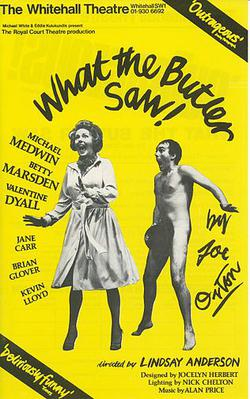
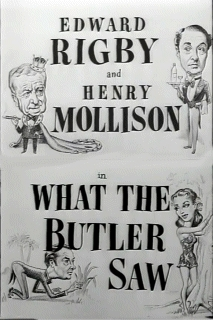

The Cultural Moment
"What The Butler Saw"
 - 1886: Lord Colin Campbell divorces his wife Gertrude Elizabeth Blood for being caught cheating by the butler through a peephole.
- 1900: Mutoscope erotic film reel created.
- 1924: Silent comedy film by George Dewhurst.
- 1950: British comedy film by Godfrey Grayson.
- 1969: Farce play by English playwright Joe Orton.
- 1987: TV Series created based on Orton’s play.
- 2004: British Reality TV Series created: winner gets $50,000.
The evolution of the term “What the Butler Saw” is very interesting. As displayed in the timeline, the mutoscope was one of the first items to coin the term. However, it has permeated into contemporary culture in an extraordinary way. The mutoscope incorporated this “voyeur” aspect with it’s little peephole to see the film reel. Originally, Lord Colin Campbell’s butler is rumoured to have seen Gertrude Elizabeth Blood, Lord Campbell’s, with another man through the keyhole of a door. Since then, there have been TV series’, plays and films created relating to the unique phrase. Presently, “What the Butler Saw” has evolved into a term relating to voyeurism.